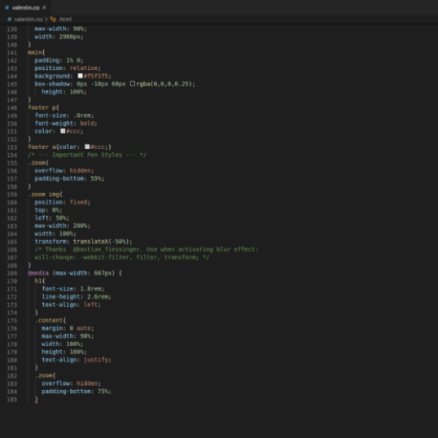

HTML/CSS/JS
Herzlich Willkommen im Klassenzimmer Informatik!
Wir programmieren diese Webseite mit HTML, CSS, JS.
Diese Programmiersprache ist sehr weit verbreitet (Weil ja jede Browser-Web mit HTML (und co.)
geschrieben wurde.)
Diese Programmiersprache wurde von
Tim Berners-Lee erfunden,
der
auch das World Wide Web (WWW.)
erfunden hat.
HTML
HTML ist eine Art Programmiersprache, mit der eigentlich alle Webseiten programmiert sind.
Man
kann
damit sehr viel machen. Es können Buttons, Links,
Tabellen, Bilder, Boxen und
vieles mehr programmiert werden.
HTML ist eine simple Art, zu programmieren, da sie nicht
"unnötig"
kompliziert ist.
Wie ein Haus ohne Farbe, ohne Strom und ohne Wasser.

So sieht HTML aus
Wenn du ein gutes Tutorial für HTML haben willst, empfehle ich dir w3schools.com
CSS
CSS ist auch eine Art Programmiersprache.
Sie wird im Zusammenhang mit HTML verwendet.
Hiermit
können wir das Haus von vorhin anmalen.
Mit CSS kann man Texte farbig schreiben, Tabellen einfärben, Textgrössen verändern,
Schriftart
bestimmen, Links gestalten z. B. zu einem Button "umgestalten",
Bilder skalieren sowie
den Hintergrund bestimmen.

So sieht CSS aus
Wenn du ein gutes Tutorial für CSS haben willst, empfehle ich dir wieder w3schools.com
JavaScript
JavaScript bzw. JS ist eigentlich das richtige Programmieren.
JavaScript ist viel komplizierter
als HTML und CSS.
Dafür kann man mit JS auch viel mehr machen. Somit können wir das
Haus
zu einem Minergie Haus umbauen. Z.B. automatische Rollläden,
die zu bestimmten Zeiten
rauf-
oder runterfahren.
JS bekommt Befehle und führt Befehle aus. Mit JS kann man
(fast)
alles machen, was auch mit dem Gehirn möglich ist
(dieses JS-Gehirn kann man dann auch brauchen,
da
das eigene dann abgeraucht ist)
.Mit JS kann man Buttons zum Leben erwecken,
Rechnungen ausführen,
Texte ver- und entschlüsseln, (virtuelle) Objekte bewegen/vergrössern
u.v.m..
So sieht JavaScript aus
Wenn du ein gutes Tutorial für JavaScript haben willst, empfehle ich dir auch wieder w3schools.com
Thymio
Auch Informatik und Robotik ist der Thymio.